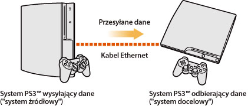
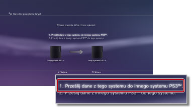
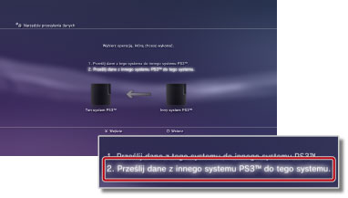

Ustawienia > Ustawienia systemu > Narzędzie przesyłania danych
Narzędzie przesyłania danych
Dane zapisane w pamięci masowej jednego systemu PS3™ można obecnie przesyłać (kopiować lub przenosić) do pamięci masowej innego systemu PS3™ przy użyciu kabla Ethernet.

Informacje
- Podczas wykonywania tej operacji wszystkie dane przechowywane w systemie PS3™ odbierającym dane ("systemie docelowym") zostaną usunięte.
- Usuniętych danych nie można przywrócić, zatem należy zachować ostrożność, aby przypadkowo nie usunąć ważnych danych. Odpowiedzialność za utratę lub uszkodzenie danych spoczywa na użytkowniku.
- Przesłanie niektórych typów danych może być niemożliwe. Szczegółowe informacje można znaleźć tutaj.
Przygotowanie systemów do przesyłania danych
Przed rozpoczęciem operacji przesyłania danych należy wykonać następujące czynności.
1. |
Zaktualizuj oprogramowanie systemowe obu systemów PS3™ do najnowszej wersji. |
|---|---|
2. |
Przygotuj system PS3™, z którego dane będą wysyłane ("system źródłowy"). |
- Utwórz konto w usłudze Sony Entertainment Network, jeśli dany użytkownik nie ma takiego konta.
- - Wybierz opcję
 (PlayStation™Network) >
(PlayStation™Network) >  (Zapisz się), a następnie postępuj zgodnie z instrukcjami wyświetlanymi na ekranie, aby utworzyć konto.
(Zapisz się), a następnie postępuj zgodnie z instrukcjami wyświetlanymi na ekranie, aby utworzyć konto. - Przeprowadź dezaktywację systemu PS3™, jeśli dane, które mają zostać przesłane, obejmują zawartość zakupioną w sklepie PlayStation®Store.
- - Wybierz opcje (PlayStation™Network) >
 (Zarządzanie kontami) >
(Zarządzanie kontami) >  (Aktywacja systemu).
(Aktywacja systemu). - Aby przesłać informacje o trofeach, utwórz ich kopię zapasową lub zsynchronizuj informacje o trofeach w systemie PS3™ z serwerem usługi PSNSM.
- - Zarejestruj się w usłudze PSNSM, a następnie wybierz opcje (PlayStation™Network) >
 (Kolekcja trofeów).
(Kolekcja trofeów). - Utwórz kopię zapasową informacji profilu oraz etapów, które zostały utworzone w zapisanej grze LittleBigPlanet™. Dane, dla których utworzono kopie zapasowe, będzie można później wykorzystać podczas grania w grę LittleBigPlanet™ w docelowym systemie PS3™.
Informacja
W przypadku wykonywania operacji przesyłania danych bez utworzenia konta:
- Korzystanie z zapisanych danych w docelowym systemie PS3™ może być niemożliwe.
- Zdobywanie trofeów przy użyciu zapisanych danych, które zostały przesłane, może być niemożliwe.
- Nie są przesyłane informacje o trofeach.
Przesyłanie danych
Wyłącz oba systemy PS3™, a następnie wykonaj następujące czynności. Jeśli przesyłane są dane zapisanej gry, które są zabezpieczone przed kopiowaniem, lub dane chronione prawami autorskimi, zostaną one przeniesione do docelowego systemu PS3™ i usunięte ze źródłowego systemu PS3™.
1. |
Połącz bezpośrednio oba systemy PS3™ przy użyciu kabla Ethernet. |
|---|---|
2. |
Podłącz systemy PS3™ do różnych złączy wejściowych wideo w telewizorze. |
3. |
Włącz telewizor, a następnie włącz systemy PS3™. |
4. |
W źródłowym systemie PS3™ wybierz opcje |
5. |
Wybierz opcję [1. Prześlij dane z tego systemu do innego systemu PS3™.].  Jeśli nie wykonano czynności przygotowawczych opisanych powyżej, postępuj zgodnie z instrukcjami wyświetlanymi na ekranie, aby je wykonać. |
6. |
Gdy system PS3™ oczekuje na rozpoczęcie przesyłania danych, za pomocą pilota przełącz telewizor na wyświetlanie obrazu z wejścia wideo docelowego systemu PS3™. |
7. |
W docelowym systemie PS3™ wybierz opcje |
8. |
Wybierz opcję [2. Prześlij dane z innego systemu PS3™ do tego systemu.].  Wykonaj instrukcje wyświetlane na ekranie, aby zakończyć operację. |
 (Ustawienia) >
(Ustawienia) >  (Ustawienia systemu) > [Narzędzie przesyłania danych].
(Ustawienia systemu) > [Narzędzie przesyłania danych].Wskazówki
- Po zakończeniu operacji przesyłania danych można wyłączyć źródłowy system PS3™. W telewizorze ustaw wyświetlanie obrazu ze źródłowego systemu PS3™, a następnie wybierz opcje
 (Użytkownicy) >
(Użytkownicy) >  (Wyłącz system).
(Wyłącz system). - Jeśli w ramach operacji została przeniesiona zawartość zakupiona w sklepie PlayStation®Store, przed użyciem danych należy aktywować docelowy system PS3™. Zaloguj się do systemu PS3™ jako użytkownik, który jest właścicielem zawartości, a następnie wybierz opcje (PlayStation™Network) > (Zarządzanie kontami) > (Aktywacja systemu), aby aktywować system.
Ograniczenia dotyczące narzędzia przesyłania danych
Niektórych typów danych nie można przesyłać przy użyciu narzędzia przesyłania danych, a niektóre typy danych można przesyłać, ale nie można ich odtwarzać w docelowym systemie PS3™.
Najnowsze informacje można znaleźć w witrynie internetowej SIE odpowiedniej dla danego regionu. Następujące typy danych nie mogą być przesyłane:
- Utwory (w tym zestawy piosenek) dla oprogramowania SingStar™, które zostały zapisane w pamięci masowej systemu PS3™
- Pliki wideo chronione prawem autorskim (typy plików: MGV i ETS)
- Pliki wideo zgodne z usługą DivX® VOD (wideo na żądanie)
- Następujące tytuły oprogramowania w formacie PlayStation®2, jeżeli zostały zainstalowane w pamięci masowej systemu PS3™:
Aby możliwe było korzystanie z następujących typów danych, konieczne jest wykonanie pewnych dodatkowych czynności po zakończeniu ich przesyłania:
- GripShift™
- - Przy pierwszym uruchomieniu gry po operacji przesyłania danych zostanie wyświetlony komunikat o błędzie i granie będzie niemożliwe. Aby korzystać z gry, należy ją pobrać i zainstalować ponownie.
- Zapisane dane gier Ghostbusters™ i Ghostbusters™: The Video Game
- - Zapisana gra nie zostanie rozpoznana przy pierwszym uruchomieniu gry po operacji przesyłania danych. Aby korzystać z zapisanej gry, należy zamknąć grę i uruchomić ją ponownie.
Wskazówka
Niektóre pozycje oprogramowania mogą nie być dostępne do sprzedaży w niektórych regionach.